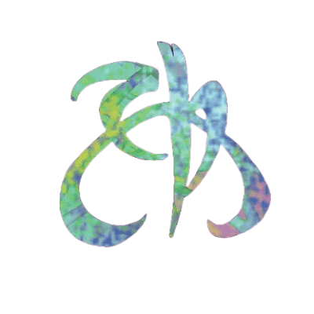

Dragonmarks
A dragonmark is a magical symbol that manifests on the skin, but its color immediately differentiates it from any mundane tattoo. A dragonmark is etched in shades of blue, green, and purple so vivid that they appear to glow, though the mark provides no real illumination.
A dragonmark is associated with one or more magical abilities, and a person who carries a dragonmark can exercise these powers. When a bearer invokes the power of a dragonmark, its colors shimmer and flow, and the skin grows warm to the touch. The mark grows warmer each time its power is used over the course of a day; by the time the bearer has expended his full allotment of spell-like abilities, the mark is fever-hot and cannot be used again until it cools. Shapechanging ability and illusions can mimic a dragonmark's appearance, but usually cannot make it warm to the touch.
In keeping with their magical nature, dragonmarks are not simply skin deep. If a mark is eut or scarred, it reappears as the skin that bears it magically heals. If a warrior loses the hand that bears his dragonmark, the mark will manifest elsewhere on his body. Creatures under the effect of polymorph, wild shape, and other shapechanging effects retain their dragonmarks unless they specifically will them to be hidden.
Nearly all dragonmarked heirs first manifest the least mark of their house. When a character increases her dragonmark’s power, the mark physically expands. A typicalleast dragonmark covers an area 2 inches square on the skin. Lesser marks are typically 3-5 inches across, while greater dragonmarks are 6-8 inches. Siberys dragonmarks are vast designs that often cover the bearer's entire chest or torso.
MARKED BY BLOOD
Dragonmarks are tied to bloodlines. The dragonmarked houses are the descendants of the families that first manifested the marks, and a character with a dragonmark can always find a connection to a dragonmarked house somewhere in the roots of his family tree.
Though the appearance of marks cannot be consistently predicted, approximately half the children born to dragonmarked parents eventually develop dragonmarks of their own. Common belief holds that parents with powerful marks are more likely to produce gifted children; likewise, children often develop the same powers as their parents. Within House Sivis, members of the Torralyn family typically manifest whispering wind, while Syrralans are more likely to possess the power of arcane mark. Houses often arrange marriages with marks in mind.
Despite these beliefs, dragonmarks are clearly about more than selective breeding. A child born to parents possessing least marks might later manifest the greater mark, or no mark at all. It is also known that the hybrid races cannot inherit the marks oftheir parents, so that a human cannot pass the Mark of Making to a half-elf child. A member of a dragonmarked house reincarnated as another race keeps his dragonmark, but children born to such transformed creatures never possess the dragonmark of the parent's original race. Though legend states that Erandis d'Vol, the last known heir ofthe Mark of Death, was a half-dragon, only the Mark of Finding is known to cross racial barriers, manifesting on both humans and half-orcs.
THE TEST OF SIBERYS
Children are not born with dragonmarks. Rather, a dragonmark most often appears in response to a stressful situation in which the powers of the mark could prove useful. A Jorasco heir feels her dragonmark flare to life as her best friend lies dying. A Medani scion instinctively realizes the meal he is about to eat is poisoned, and in an instant of burning pain, his mark appears.
The Test of Siberys—a rite of passage undertaken by the adolescent children of the dragonmarked houses—is rumored to induce the kind of extreme stress needed for dragonmarks to manifest. The test varies from house to house, and is based both on the powers ofthe markand the traditions of the family. Outsiders, even those of dragonmarked houses, know little of what goes on in a particular house’s test. l'hough a person can fail the test and still manifest a mark at a later age (as shown by the fact that a player character can manifest a mark at any time), this is rare. As a rule, it is assumed that those who fail will never develop a dragonmark.
The Test of Siberys shapes the future of a character. A successful child emerges as a dragonmarked lord with a vital role to play in his family's future; one who fails still maintains the privileges of her bloodline, but must fight to prove her worth in the mundane offices of her house.
Dragonmarks rules
To possess a dragonmark, a character must take the Least Dragonmark Ancestry feat. They can increase the power of the dragonmark by adding the Lesser Dragonmark and Greater Dragonmark feats. Dragonmarked feats are Ancestry feats, however their is some General or Skill Feats tied to particular mark at the end of this chapter.
Mark of Detection
The Mark of Detection grants abilities that enable its possessor to discern the presence of threats, from poisoned food to scrying eyes.
House Medani
The half-elves of House Medani carry the Mark of Detection. One of the youngest of the dragonmarked houses, House Medani organized into a mercantile house as a result of the War of the Mark that ended fifteen hundred years ago. Despite the fact that it has stood as an established mercantile house for fifteen centuries, some of the older houses still view House Medani as an upstart. Unconcerned with the opinions of its peers, House Medani controls the Warning Guild, which offers services related to personal protection. House Medani originated in Breland and continues to concentrate its efforts in the central region of Khorvaire. Unmarked members of House Medani sell their services as scouts, sentries, and similar occupations.
Ancestry Feats
As a aiuvarin, when you gain an Ancestry Feat you can select from among the following feats.
1st level
Least Mark of Detection
FEAT 1
In addition, you gain a +1 status bonus to any Perception checks.
5th level
Lesser Mark of Detection
FEAT 5
This is a focus spell, granting you a focus pool or expanding that pool. You can Refocus by medidating. This focus spell is heightened to a spell rank equal to half your level rounded up.(For more on focus spells, see PC 298.)
9th level
Greater Mark of Detection
FEAT 9
This is a focus spell expanding your focus pool. You can Refocus by medidating. This focus spell is heightened to a spell rank equal to half your level rounded up.(For more on focus spells, see PC 298.)

Mark of Finding
The Mark of Finding bestows powers related to locating creatures or objects, making those who carry it useful as investigators or bounty hunters. In addition, members of the Finders Guild serve an essential role in locating dragonshards and selling them to other guilds for attunement.
House Tharashk
House Tharashk is a family of half-orcs and humans originally from the region around the Shadow Marches. It controls the Finders Guild, which includes free lance inquisitives, some law enforcement agents, explorers for-hire, and dragonshard prospectors. The Finders Guild concentrates its efforts in western Khorvaire, where a lucrative dragonshard prospecting business flourishes, although its members are found in every major town and city. The unmarked members of House Tharashk assist their dragonmarked kin in every area; they offer mundane investigative services and help on dragonshard prospecting expeditions.
Ancestry Feats
As a human or a dromaar, when you gain an Ancestry Feat you can select from among the following feats.
1st level
Least Mark of Finding
FEAT 1
In addition, you gain a +1 status to any Identify Magic, Investigate, Search, Seek, Sense Direction or Track activities rolls.

5th level
Lesser Mark of Finding
FEAT 5
This is a focus spell, granting you a focus pool or expanding that pool. You can Refocus by medidating. This focus spell is heightened to a spell rank equal to half your level rounded up. (For more on focus spells, see PC 298.)
9th level
Greater Mark of Finding
FEAT 9
This is a focus spell expanding your focus pool. You can Refocus by medidating. This focus spell is heightened to a spell rank equal to half your level rounded up. (For more on focus spells, see PC 298.)
Mark of Handling
The Mark of Handling gifts do not win battles or drive the commerce of nations; the house was not instrumental in the Last War or in establishing the traditions of the houses. Its mark allows it to better care for and control animals; while useful, this ability is hardly the stuff of legend. Yet somehow, this inconspicuous house carries more than its share of controversy.
House Vadalis
The humans of House Vadalis carry the Mark of Handling. Their Handlers Guild controls the business of breeding and selling livestock throughout Khorvaire. Though the elves of Valenar are gaining a reputation for breeding the finest horses in Khorvaire, their steeds are rare and expensive, while House Vadalis provides a strong, loyal, and affordable mount. Unmarked members of House Vadalis are animal handlers, breeders, auctioneers, stablekeepers, drivers, and teamsters
Ancestry Feats
As a human, when you gain an Ancestry Feat you can select from among the following feats.
1st level
Least Mark of Handling
FEAT 1
In addition, you gain a +1 status bonus to Nature skill checks to command, tame, and train an animal or to bond with an animal.

5th level
Lesser Mark of Handling
FEAT 5
This is a focus spell, granting you a focus pool or expanding that pool. You can Refocus by medidating. (For more on focus spells, see PC 298.)
9th level
Greater Mark of Handling
FEAT 9
This is a focus spell expanding your focus pool. You can Refocus by medidating. (For more on focus spells, see PC 298.)
Mark of Healing
The halflings who bear the Mark of Healing have saved countless lives through their good works. They heal the sick and the dying, and provide comfort and respite for those whom even magic cannot cure. They often work hand in hand with House Ghallanda, giving travelers access to healing and aid even in remote areas. By those who owe their health or life to the Mark of Healing, the bearers’ name is praised.
House Jorasco
The halflings of House Jorasco carry the Mark of Healing and operate the Healers Guild, which controls both the mundane and magical healing trades. A sick or injured person in Khorvaire is far more likely to seek healing from the Healers Guild than from any temple, and in fact most temples do not offer healing services for sale (though they still heal their own champions and faithful when necessary). Unmarked members of House Jorasco are expertly trained in the healing arts, as well as in fields such as alchemy and herbalism.
Ancestry Feats
As a halfling, when you gain an Ancestry Feat you can select from among the following feats.
1st level
Least Mark of Healing
FEAT 1
In addition, you gain a +1 status bonus to Medicine skill checks to Administer First Aid, Treat Disease, Treat Poison, Treat Wounds or Battle Medicine check.
5th level
Lesser Mark of Healing
FEAT 5
You can cast the renew body or stall affliction spell as a 3rd-level arcane focus spell.
This is a focus spell, granting you a focus pool or expanding that pool. You can Refocus by medidating. (For more on focus spells, see PC 298.)
9th level
Greater Mark of Healing
FEAT 9
You can cast the living grasp spell as a 5th-level arcane focus spell.
This is a focus spell expanding your focus pool. You can Refocus by medidating. (For more on focus spells, see PC 298.)
Mark of Hospitality
For centuries, bearers of the Mark of Hospitality roamed the Talenta Plains, offering food and shelter to the needy. They sponsored glorious feasts for the heroes of the plains, standing apart from feuds and tribal conflicts.
House Ghallanda
The halflings of House Ghallanda carry the Mark of Hospitality, which is extremely useful in the halflings’ native nomadic culture. In the cities of Khorvaire, House Ghallanda operates the Hostelers Guild, whose members include innkeepers, chefs, and restaurateurs. While the guild does not operate every inn and dining establishment in Khorvaire, it enforces standards and performs inspections to regulate those businesses. Unmarked members of House Ghallanda run some of the finest hotels and restaurants in Khorvaire.
Ancestry Feats
As a halfling, when you gain an Ancestry Feat you can select from among the following feats.
1st level
Least Mark of Hospitality
FEAT 1
You can cast the prestidigitation or transmute fare cantrip as an arcane innate spell at will.This cantrip is heightened to a spell rank equal to half your level rounded up.
In addition, you gain a +1 status bonus to Diplomacy skill checks.
5th level
Lesser Mark of Hospitality
FEAT 5
You can cast the manifest meal or unseen servant spell as a 3rd-level arcane focus spell.
This is a focus spell, granting you a focus pool or expanding that pool. You can Refocus by medidating. (For more on focus spells, see PC 298.)
9th level
Greater Mark of Hospitality
FEAT 9
You can cast the instant longhouse spell as a 5th-level arcane focus spell.
This is a focus spell expanding your focus pool. You can Refocus by medidating. (For more on focus spells, see PC 298.)
Mark of Making
The Mark of Making grants its bearers a natural talent for creation and repair. With a touch, broken tools, worn constructs, and shattered devices are restored to perfection. Magical mending is more than art—it underpins industry and commerce, keeping the gears of invention turning and shaping the very economy of the world.
House Cannith
The humans of House Cannith carry the Mark of Making. Members of their Tinkers Guild often travel as widely as more traditional tinkers, stopping in villages to repair goods as they go. House Cannith also runs the Fabricators Guild, whose members include those with lesser or greater marks who can fabricate new items rather than just repair old ones. Unmarked members of House Cannith are well-to-do artisans and, less often, mundane tinkers.
Ancestry Feats
As a human, when you gain an Ancestry Feat you can select from among the following feats.
1st level
Least Mark of Making
FEAT 1
You can cast the repair or slapdash fixes cantrip as an arcane innate spell at will.This cantrip is heightened to a spell rank equal to half your level rounded up.
In addition, you gain a +1 status bonus to Craft skill checks.
5th level
Lesser Mark of Making
FEAT 5
You can cast the quick kiln or weave plant spell as a 3rd-level arcane focus spell.
This is a focus spell, granting you a focus pool or expanding that pool. You can Refocus by medidating. (For more on focus spells, see PC 298.)
9th level
Greater Mark of Making
FEAT 9
You can cast the fabricate spell as a 5th-level arcane focus spell.
This is a focus spell expanding your focus pool. You can Refocus by medidating. (For more on focus spells, see PC 298.)
Mark of Passage
The Mark of Passage bestows magical powers related to transportation and teleportation.
House Orien
The humans of House Orien are the bearers of the Mark of Passage. They control a worldwide Couriers Guild that uses its powers to carry parcels, messages, and people over great distances instantaneously—for a high price. The house has holdings and operates across Khorvaire, though it traces its origins to Aundair. The house’s Transportation Guild oversees lightning rail and caravan routes throughout central Khorvaire. Unmarked members of House Orien work as mundane couriers, often within the boundaries of a single city or nation.
Ancestry Feats
As a Human, when you gain an Ancestry Feat you can select from among the following feats.
1st level
Least Mark of Passage
FEAT 1
You can cast the marked mount or warp step cantrip as an arcane innate spell at will.This cantrip is heightened to a spell rank equal to half your level rounded up.
In addition, you gain a +1 status bonus to Survival skill checks.
5th level
Lesser Mark of Passage
FEAT 5
You can cast the flicker step or dimensional leap spell as a 3rd-level arcane focus spell.
This is a focus spell, granting you a focus pool or expanding that pool. You can Refocus by medidating. (For more on focus spells, see PC 298.)
9th level
Greater Mark of Passage
FEAT 9
You can cast the transport self spell as a 5th-level arcane focus spell.
This is a focus spell expanding your focus pool. You can Refocus by medidating. (For more on focus spells, see PC 298.)
Mark of Scribing
The Mark of Scribing grants powers related to writing and communication. Those who carry it specialize in the magic of the written word, serving as diplomats and translators or facilitating communication over long distances.
House Sivis
The gnomes of House Sivis carry the Mark of Scribing. This house controls the Speakers Guild, which offers the services of translators and mediators and can facilitate instantaneous long-range communication by means of sending. In addition, House Sivis controls the Notaries Guild, which uses arcane mark to certify legal documents and similar work. This guild also prepares secure documents intended for specific recipients using illusory script and performs transcription and copying services. House Sivis originated in Zilargo and has spread along with the gnomes throughout the Five Nations. The house does not usually operate in regions where gnomes are rare. The unmarked members of House Sivis serve as mediators, scribes, messengers, go-betweens, and sometimes diplomats.
Ancestry Feats
As a gnome, when you gain an Ancestry Feat you can select from among the following feats.
1st level
Least Mark of Scribing
FEAT 1
You can cast the message or sigil cantrip as an arcane innate spell at will.This cantrip is heightened to a spell rank equal to half your level rounded up.
In addition, you gain a +1 status bonus to Society skill checks.
5th level
Lesser Mark of Scribing
FEAT 5
You can cast the Triggered message or whispering wind spell as a 3rd-level arcane focus spell.
This is a focus spell, granting you a focus pool or expanding that pool. You can Refocus by medidating. (For more on focus spells, see PC 298.)
9th level
Greater Mark of Scribing
FEAT 9
You can cast the speaking stone spell as a 5th-level arcane focus spell.
This is a focus spell expanding your focus pool. You can Refocus by medidating. (For more on focus spells, see PC 298.)
Mark of Sentinel
The Mark of Sentinel conveys powers that protect creatures from harm.
House Deneith
The humans of House Deneith carry the Mark of Sentinel. They put their powers to use in the Defenders Guild, which offers comprehensive bodyguard services to persons of position and wealth. The house also provides sentinel marshals that have jurisdiction across national boundaries. House Deneith originated in Karrnath, but the Defenders Guild operates across Khorvaire. The unmarked members of House Deneith work as bodyguards without the benefit of magical assistance.
Ancestry Feats
As a human, when you gain an Ancestry Feat you can select from among the following feats.
1st level
Least Mark of Sentinel
FEAT 1
You can cast the forbidding ward or shield cantrip as an arcane innate spell at will.This cantrip is heightened to a spell rank equal to half your level rounded up.
In addition, you gain a +1 status bonus to Initiative checks.
5th level
Lesser Mark of Sentinel
FEAT 5
You can cast the energy ward or share pain spell as a 3rd-level arcane focus spell.
This is a focus spell, granting you a focus pool or expanding that pool. You can Refocus by medidating. (For more on focus spells, see PC 298.)
9th level
Greater Mark of Sentinel
FEAT 9
You can cast the resilient orb spell as a 5th-level arcane focus spell.
This is a focus spell expanding your focus pool. You can Refocus by medidating. (For more on focus spells, see PC 298.)
Mark of Shadow
The Mark of Shadow grants divinatory powers of clairvoyance, as well as illusory powers of deception.
Elven houses
One of the most surprising and devastating effects of the Last War was the schism of the family that carries the Mark of Shadow. House Phiarlan, an elf family of ancient lineage, carried the Mark of Shadow for millennia before the Last War and was known as an information clearinghouse. During the war, however, the mission of the house turned its members against each other, eventually resulting in the formation of a new house—House Thuranni.
The two houses continue their ancient work of espionage, surveillance, and similar intelligence-gathering activities, while outwardly pursuing mercantile activities based on entertainment and artisan endeavors. House Phiarlan’s Entertainers and Artisans Guild is based in Breland, and its spies work for (or sell information to) Thrane, Aundair, and Breland. House Thuranni, based in the Lhazaar Principalities (but with an enclave in Breland), controls the Shadow Network. Its members perform their spying activities on behalf of the Lhazaar princelings, Karrnath, Droaam, Q’barra, and even the Order of the Emerald Claw. Unmarked members of both House Phiarlan and House Thuranni work as entertainers and artisans who gather information and serve as spies and rogues.
Ancestry Feats
As an elf, when you gain an Ancestry Feat you can select from among the following feats.
1st level
Least Mark of Shadow
FEAT 1
You can cast the disguise self or figment cantrip as an arcane innate spell at will.This cantrip is heightened to a spell rank equal to half your level rounded up.
In addition, you gain a +1 status bonus to Diplomacy skill checks.
5th level
Lesser Mark of Shadow
FEAT 5
You can cast the shadow cloak or whisper's ear spell as a 3rd-level arcane focus spell.
This is a focus spell, granting you a focus pool or expanding that pool. You can Refocus by medidating. (For more on focus spells, see PC 298.)
9th level
Greater Mark of Shadow
FEAT 9
You can cast the far glance spell as a 5th-level arcane focus spell.
This is a focus spell expanding your focus pool. You can Refocus by medidating. (For more on focus spells, see PC 298.)
Mark of Storm
The Mark of Storm grants the power to control weather, primarily through the manipulation of clouds, wind, and rain. A character with this mark can create a short, localized drizzle or a powerful rainstorm, a short breeze, or enough wind to propel a ship across the sea.
House Lyrandar
The half-elves of House Lyrandar carry the Mark of Storm. Their Windwrights Guild dominates the business of shipping and transportation over both sea and sky. Their Raincallers Guild provides services to farmers across Khorvaire. Both guilds are found in every coastal nation of Khorvaire, and they proudly trace their ancestry to the elves of Aerenal and the humans of Thrane. Unmarked members of House Lyrandar are prosperous farmers, plantation owners, and sailors crewing the ships driven by their marked relatives.
Ancestry Feats
As a Aiuvarin, when you gain an Ancestry Feat you can select from among the following feats.
1st level
Least Mark of Storm
FEAT 1
You can cast the endure element or hurl wind cantrip as an arcane innate spell at will.This cantrip is heightened to a spell rank equal to half your level rounded up.
In addition, you gain a +1 status bonus to Acrobatics skill checks.
5th level
Lesser Mark of Storm
FEAT 5
You can cast the favor of the wind or rain curtain spell as a 3rd-level arcane focus spell.
This is a focus spell, granting you a focus pool or expanding that pool. You can Refocus by medidating. (For more on focus spells, see PC 298.)
9th level
Greater Mark of Storm
FEAT 9
You can cast the calm weather spell as a 5th-level arcane focus spell.
This is a focus spell expanding your focus pool. You can Refocus by medidating. (For more on focus spells, see PC 298.)
Mark of Warding
The Mark of Warding protects places from unwanted intruders and items from theft.
House Kundarak
The dwarves of House Kundarak carry the Mark of Warding. They control the Warding Guild, which specializes in security for businesses and precious goods. House Kundarak originated in the Mror Holds and now has interests in many large towns and cities throughout Khorvaire. The unmarked members of House Kundarak work as security consultants, often specializing in trapmaking as well as running the House Kundarak bank.
Ancestry Feats
As a dwarf, when you gain an Ancestry Feat you can select from among the following feats.
1st level
Least Mark of Warding
FEAT 1
You can cast the arcane latch or warning spell as an arcane innate spell at will.
In addition, you gain a +1 status to any Disable device, open lock and Search activities rolls.
5th level
Lesser Mark of Warding
FEAT 5
You can cast the unlock or veiled object spell as a 3rd-level arcane focus spell.
This is a focus spell, granting you a focus pool or expanding that pool. You can Refocus by medidating. (For more on focus spells, see PC 298.)
9th level
Greater Mark of Warding
FEAT 9
You can cast the incapacitation glyph spell as a 5th-level arcane focus spell.
This is a focus spell expanding your focus pool. You can Refocus by medidating. (For more on focus spells, see PC 298.)
Dragonmark Powers
Animal insight
Arcane latch
Calm weather
Focus 5
This spell counteracts any extreme weather effects created by magic, both at the moment of casting and for the duration of the spell.
Detect magic
You detect illusion magic only if that magic’s effect has a lower rank than the rank of your detect magic spell. However, items that have an illusion aura but aren’t deceptive in appearance (such as an invisibility potion) typically are detected normally.
Detect metal
You detect metal hidden by illusions (such as invisibility) only if the illusion has a lower rank than your detect metal spell. Against deceptive illusions, detect metal always notices an absence of metal when a non-metallic object is disguised as metallic. However, if the deception involves disguising one metallic object as another, such as pretending a copper coin is made of gold, detect metal registers only the presence of metal, not its type, even if the rank of your detect metal spell exceeds that of the illusion effect.
Dimensional leap
Disguise self
Casting disguise self counts as setting up a disguise for the Impersonate use of Deception; it ignores any circumstance penalties you might take for disguising yourself as a dissimilar creature, gives you a +4 status bonus to Deception checks to prevent others from seeing through the disguise, and lets you add your level to such Deception checks even if untrained. You can Dismiss this spell.
Dominate animals
endure element
energy ward
enlarge beast
fabricate
far glance
Favor of the wind
When you sustain the spell, you can alter the wind’s direction by up to 45 degrees.
figment
find
Focus 3
Find the Path
Focus 5
flicker step
forbidding ward
healing touch
hurl wind
Instant hut
focus 5
The hut contain a cots and a small fireplace holding a magical fire that keeps the interior comfortably temperate, shielding creatures within from most ordinary weather. However, extreme heat or cold, powerful storms, or winds of hurricane force or greater can destroy the hut.
know the way
lead the way
Focus 3
living grasp
Manifest meal
Marked mount
cantrip 1
Message
Momentary glyph
The glyph is a magical trap, using your spell DC for both the Perception check to notice it and the Thievery check to disable it; both checks require the creature attempting them to be trained in order to succeed. You can Dismiss the glyph you create with this spell so long as you can see it. Everytime you cast Momentary glyph, any still active glyph expire.
prestidigitation
- Cook Cool, warm, or flavor 1 pound of nonliving material.
- Lift Slowly lift an unattended object of light Bulk or less 1 foot off the ground.
- Make Create a temporary object of negligible Bulk, made of congealed magical substance. The object looks crude and artificial and is extremely fragile—it can’t be used as a tool, weapon, or locus or cost for a spell.
- Tidy Color, clean, or soil an object of light Bulk or less. You can affect an object of 1 Bulk with 10 rounds of concentration, and a larger object at 1 minute per Bulk.
quick kiln
rain curtain
- If a fire effect crosses through the rain, its targets use the outcome one degree of success better than the result of their saving throw.
- Creatures with a weakness to water that cross the rain or start their turn in the curtain take damage equal to their weakness.
- The curtain imposes a –1 circumstance penalty to Perception checks to sense anything on the other side.
read aura
cantrip 1
renew body
repair
resilient orb
root reading
runic beast
sense poison
Sense scrying
sense the unseen
shadow cloak
You can use concealed condition gained from the shadows to Hide, though observant creatures can still follow the moving aura of shadow, making it difficult for you to become completely undetected. You can use an Interact action to remove the cloak and leave it behind as a decoy, where it remains, reducing light for the rest of the spell’s duration. If anyone picks up the cloak after it’s been removed, the cloak evaporates and the spell ends.
share pain
shield
While the spell is in effect, you can use the Shield Block reaction with your magic shield. The shield has Hardness 5. You can use the spell’s reaction to reduce damage from any spell or magical effect, even if it doesn’t deal physical damage. After you use Shield Block, the spell ends and you can’t cast it again for 10 minutes.
sigil
slapdash fixes
speaking stone
focus 5
stabilize
stall affliction
summon beast
tame
This spell works on only domesticated animals; for example, you could use it on guard dogs or stray dogs, but not feral dogs or wolves. If the socialization of the animal is in question, the decision is up to the GM.
transmute fare
This spell doesn’t remove nor prevent contamination, natural decay, or spoilage, nor does it make the food any more nutritious.
transport self
triggered message
trueglimpse
Unseen servant
Veiled object
Focus 3
warning
cantrip 1
warp step
weave plant
whisper's ear
focus 3
whispering wind
Your message can contain no more than 10 words. It moves at a speed of 1 mile per hour; when it arrives, the wind swirls around the area and whispers the full message. A voice on the breeze can’t activate magical effects triggered by voices.